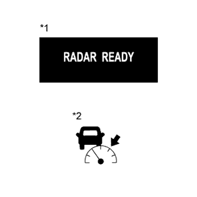
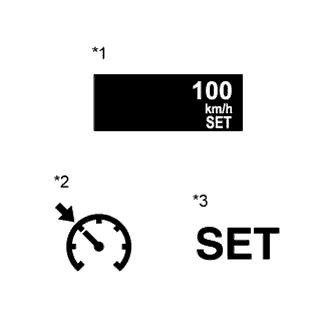
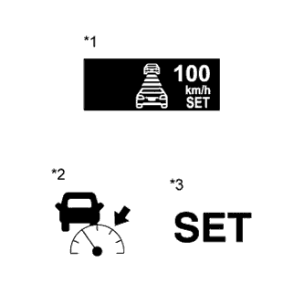

ДИНАМИЧЕСКАЯ РАДАРНАЯ СИСТЕМА КРУИЗ-КОНТРОЛЯ > ОПИСАНИЕ СИСТЕМЫ |
| ОБЩИЕ СВЕДЕНИЯ |
Динамическая радарная система круиз-контроля может работать в 2 режимах круиз-контроля: режиме поддержания заданной скорости и режиме контроля дистанции между автомобилями.
Для моделей с 1GR-FE:
Если впереди на той же полосе находится автомобиль, то система поддерживает установленную водителем дистанцию между автомобилями. Если система определит, что скорость движущегося впереди автомобиля меньше, чем поддерживаемая ей постоянная скорость, она закроет дроссельную заслонку, чтобы уменьшить скорость. Если потребуется дополнительное снижение скорости, система приведет в действие блок управления рабочими цилиндрами тормозов, чтобы притормозить. Если впоследствии перед автомобилем в пределах предустановленной дистанции снова не будет других автомобилей (например, из-за того что движущийся впереди или ваш автомобиль перейдет в другой ряд), система медленно ускорит автомобиль до предустановленной скорости и возобновит движение в режиме поддержания постоянной скорости.
Для моделей с 1KD-FTV:
Если впереди на той же полосе находится автомобиль, то система поддерживает установленную водителем дистанцию между автомобилями. Если система определит, что скорость движущегося впереди автомобиля меньше, чем поддерживаемая ей постоянная скорость, она уменьшает объем впрыска топлива, чтобы уменьшить скорость. Если потребуется дополнительное снижение скорости, система приведет в действие блок управления рабочими цилиндрами тормозов, чтобы притормозить. Если впоследствии перед автомобилем в пределах предустановленной дистанции снова не будет других автомобилей (например, из-за того что движущийся впереди или ваш автомобиль перейдет в другой ряд), система медленно ускорит автомобиль до предустановленной скорости и возобновит движение в режиме поддержания постоянной скорости.
Режим поддержания постоянной скорости предназначен для управления движением автомобиля с постоянной скоростью. Режим контроля дистанции между автомобилями выполняет функции поддержания постоянной скорости движения автомобиля, замедления движения, движения со скоростью движущегося впереди автомобиля и ускорения движения.
Датчик радара миллиметрового диапазона и ЭБУ помощи при движении управляют системой при включенном режиме контроля дистанции между автомобилями, направляя сигналы на соответствующие приводы и ЭБУ.
В режиме контроля дистанции между автомобилями динамическая радарная система круиз-контроля получает сигналы от датчика рысканья и датчика угла поворота рулевого колеса. На основе этих сигналов она рассчитывает радиус кривой и корректирует информацию о едущем впереди автомобиле во время поворота. Кроме того, система регулирует тормозное усилие при приближении к другому автомобилю.
Система определяет наличие автомобиля впереди и расстояние до него на основе сигналов от датчика радара миллиметрового диапазона при включенном режиме контроля дистанции между автомобилями. На основе этих данных система информирует водителя о каких-либо опасностях, связанных с приближением едущего впереди автомобиля, предупредительным зуммером, выполняет управление тормозами и включает стоп-сигнал.
Ниже на рисунке рассмотрен пример управления в следующих условиях: автомобиль движется со скоростью 100 км/час (62 мили/час), а движущийся впереди автомобиль движется со скоростью 80 км/час (50 миль в час). Можно выбрать один из 3 вариантов предустановленной дистанции между автомобилями с помощью переключателя на рулевом колесе (выключателя системы контроля дистанции): длинную (примерно 50 м (160 футов)), среднюю (примерно 40 м (130 футов)) или короткую (примерно 30 м (100 футов)) при скорости автомобиля примерно 80 км/час (50 миль в час).
| НАЗНАЧЕНИЕ ОСНОВНЫХ УСТРОЙСТВ |
| Параметр / Устройство | Описание |
| Щиток приборов в сборе (контрольная лампа круиз-контроля) |
|
| Щиток приборов в сборе (зуммер) | Если ECM обнаруживает сигнал автоматического выключения во время движения автомобиля с включенным круиз-контролем, раздастся один сигнал зуммера, информирующий водителя. |
| Щиток приборов (главная контрольная лампа аварийного состояния) | Если ECM или ЭБУ помощи при движении регистрирует неисправность, данная лампа включается, информируя водителя |
| Щиток приборов (мультиинформационный дисплей) |
|
| Выключатель круиз-контроля (кнопка ON-OFF) | Включает и выключает систему круиз-контроля. |
| Переключатель круиз-контроля (управляющий переключатель) |
|
| Переключатель на рулевом колесе (выключателя системы контроля дистанции) | При движении автомобиля с включенным режимом контроля дистанции между автомобилями водитель с помощью переключателя на рулевом колесе (выключателя системы контроля дистанции) может выбрать один из 3 возможных предустановденных вариантов дистанции между автомобилями: длинную, среднюю или короткую. |
| Выключатель стоп-сигналов в сборе | Передает в ECM сигнал состояния педали тормоза, который затем передается в ЭБУ помощи при движении. |
| Переключатель стеклоочистителя ветрового стекла в сборе | Передает информацию о положении переключателя стеклоочистителя ветрового стекла в ЭБУ помощи при движении. |
| Датчик радара миллиметрового диапазона в сборе | Излучает вперед волны радара и по отраженным лучам определяет наличие впереди автомобиля, расстояние до него и его относительную скорость, после чего передает эту информацию в ЭБУ помощи при движении. |
| Датчик угла поворота рулевого колеса | Определяет угол и направление поворота рулевого колеса и передает сигналы в ЭБУ помощи при движении. |
| Датчик рысканья | Определяет скорость рысканья автомобиля и передает сигналы в ЭБУ помощи при движении. |
| Электромагнитный клапан главного цилиндра (ЭБУ системы противоскольжения) |
|
| Зуммер системы противоскольжения | Этот зуммер звучит после получения сигнала с ЭБУ системы противоскольжения. |
| ECM |
|
| Датчик положения паркинга/нейтрали | Передает в ECM сигнал положения рычага переключения передач, который затем передается в ЭБУ помощи при движении. |
| Корпус дроссельной заслонки с электродвигателем в сборе | После получения сигнала от ECM электродвигатель дроссельной заслонки приводит в действие дроссельную заслонку. |
| ЭБУ помощи при движении | При включенном режиме контроля дистанции между автомобилями ЭБУ помощи при движении определяет наличие автомобиля впереди по сигналу датчика радара миллиметрового диапазона. Затем ЭБУ помощи при движении рассчитывает ускорение или замедление, необходимое для достижения целевого расстояния между автомобилями, и выдает сигналы запроса на ECM и ЭБУ системы противоскольжения. |
| Датчик скорости автомобиля | Сигнал скорости автомобиля с ЭБУ системы противоскольжения направляется на ECM через щиток приборов |
| ПРЕДЕЛЫ СКОРОСТИ |
Нижний предел скорости
Нижний предел устанавливаемой скорости составляет приблизительно 50 км/час (30 миль в час). Система круиз-контроля не включается при движении со скоростью ниже указанного предела скорости. Если при включенной системе круиз-контроля скорость автомобиля падает ниже предела в 40 км/час (25 миль в час), круиз-контроль автоматически выключается. Когда после выключения круиз-контроля скорость автомобиля превысит нижний предел, нажмите переключатель +RES, чтобы увеличить скорость автомобиля до сохраненного в памяти значения.
Верхний предел скорости (режим поддержания постоянной скорости)
Верхний предел скорости установлен приблизительно на 200 км/час (125 миль в час). Система круиз-контроля не включается при движении со скоростью выше указанного предела скорости. Помимо этого, функция RESUME / ACCEL не может быть использована для увеличения скорости выше указанного предела.
| ПРИНЦИП РАБОТЫ СИСТЕМЫ КРУИЗ-КОНТРОЛЯ |
|  |
| *1 | Мультиинформационный дисплей |
| *2 | Контрольная лампа круиз-контроля (индикация режима контроля дистанции между автомобилями) |
ПОЛОЖЕНИЕ MODE (режим)
Нажатие переключателя круиз-контроля в положение MODE более чем на 1 секунду во время движения в режиме контроля дистанции между автомобилями (режим RADAR READY включен) переключает динамическую радарную систему круиз-контроля в режим поддержания постоянной скорости автомобиля.
|  |
ПОЛОЖЕНИЕ SET (задать) (режим поддержания постоянной скорости автомобиля)
Если во время движения со скоростью в диапазоне заданных значений скорости (между нижним и верхним пределами) после включения выключателя круиз-контроля (режим RADAR READY включен) и перехода в режим поддержания постоянной скорости автомобиля (включаются контрольная лампа круиз-контроля и контрольная лампа SET) перевести выключатель круиз-контроля в положение -SET, скорость автомобиля сохраняется и поддерживается постоянной.
| *1 | Мультиинформационный дисплей |
| *2 | Контрольная лампа круиз-контроля (индикация режима поддержания постоянной скорости) |
| *3 | Контрольная лампа SET |
|  |
ПОЛОЖЕНИЕ SET (задать) (режим контроля дистанции между автомобилями)
Если во время движения со скоростью в диапазоне заданных значений скорости (между нижним и верхним пределами) (включены контрольная лампа круиз-контроля и контрольная лампа SET) с включенным выключателем круиз-контроля (режим RADAR READY включен) перевести выключатель круиз-контроля в положение -SET, скорость автомобиля сохраняется, и дистанция между автомобилями поддерживается постоянной.
| *1 | Мультиинформационный дисплей |
| *2 | Контрольная лампа круиз-контроля (индикация режима контроля дистанции между автомобилями) |
| *3 | Контрольная лампа SET |
ПОЛОЖЕНИЕ COAST (по инерции) (режим поддержания постоянной скорости автомобиля)
Для моделей с 1GR-FE:
Если нажать и удерживать выключатель системы круиз-контроля в положении -SET во время работы системы круиз-контроля, ECM посылает в корпус дроссельной заслонки с электродвигателем управляющий сигнал "угол поворота дроссельной заслонки 0°". После отпускания выключателя скорость автомобиля восстанавливается и поддерживается постоянной.
Для моделей с 1KD-FTV:
Если нажать и удерживать выключатель системы круиз-контроля в положении -SET во время работы системы круиз-контроля, ECM посылает в электронный блок привода форсунок сигнал объема впрыска топлива. После отпускания выключателя скорость автомобиля восстанавливается и поддерживается постоянной.
ПОЛОЖЕНИЕ COAST (по инерции) (режим контроля дистанции между автомобилями)
Если нажать и удерживать выключатель круиз-контроля в положении -SET при включенном режиме контроля дистанции между автомобилями, сохраненная скорость автомобиля уменьшается примерно на 5 км/час или 5 миль в час.
ПОЛОЖЕНИЕ TAP-DOWN (понижение скорости) (режим поддержания постоянной скорости автомобиля)
Если перевести выключатель системы круиз-контроля в положение -SET (приблизительно на 0,6 с) при включенном режиме поддержания постоянной скорости, сохраненная скорость автомобиля понижается примерно на 1,6 км/час (1 миля в час). Если после перемещения выключателя круиз-контроля в положение -SET разница между текущим и сохраненным значениями скорости превышает 5 км/час (3 мили в час), скорость автомобиля запоминается и поддерживается постоянной.
ПОЛОЖЕНИЕ TAP-DOWN (понижение) (режим контроля дистанции между автомобилями) (для моделей для стран Европы)
Если перевести выключатель круиз-контроля в положение -SET (приблизительно на 0,6 с) при включенном режиме контроля дистанции между автомобилями, сохраненная скорость автомобиля понижается примерно на 5 км/час или 5 миль в час.
ПОЛОЖЕНИЕ TAP-DOWN (понижение) (режим контроля дистанции между автомобилями) (кроме моделей для стран Европы)
Если перевести выключатель круиз-контроля в положение -SET (приблизительно на 0,6 с) при включенном режиме контроля дистанции между автомобилями, сохраненная скорость автомобиля понижается примерно на 1 км/час или 1 милю в час.
ПОЛОЖЕНИЕ ACCELERATION (ускорение) (режим поддержания постоянной скорости автомобиля)
Для моделей с 1GR-FE:
Если нажать и удерживать выключатель системы круиз-контроля в положении -SET во время работы системы круиз-контроля, ECM посылает в корпус дроссельной заслонки с электродвигателем управляющий сигнал "угол поворота дроссельной заслонки 0°". После отпускания выключателя скорость автомобиля восстанавливается и поддерживается постоянной.
Для моделей с 1KD-FTV:
Если перевести выключатель круиз-контроля в положение +RES во время работы системы круиз-контроля, электронный блок привода форсунок увеличивает объем впрыска топлива. После отпускания выключателя круиз-контроля из положения +RES скорость автомобиля запоминается и поддерживается постоянной.
ПОЛОЖЕНИЕ ACCELERATION (ускорение) (режим контроля дистанции между автомобилями)
Если нажать и удерживать главный выключатель круиз-контроля в положении +RES при включенном режиме контроля дистанции между автомобилями, сохраненная скорость автомобиля увеличивается примерно на 5 км/час или 5 миль в час. При нажатии выключателя круиз-контроля в положение +RES во время следования за едущим впереди автомобилем при включенном режиме контроля дистанции между автомобилями фактическая скорость движения автомобиля не изменяется, изменяется только предустановленная скорость автомобиля.
ПОЛОЖЕНИЕ TAP-UP (повышение) (режим поддержания постоянной скорости автомобиля)
Если перевести выключатель системы круиз-контроля в положение +RES (приблизительно на 0,6 с) при включенном режиме поддержания постоянной скорости, сохраненная скорость автомобиля повышается примерно на 1,6 км/час (1 миля в час). Однако если разница между текущей и сохраненной скоростью движения автомобиля превышает 5 км/час (3 мили в час), сохраненная скорость автомобиля не меняется.
ПОЛОЖЕНИЕ TAP-UP (повышение) (режим контроля дистанции между автомобилями) (для моделей для стран Европы)
Если перевести выключатель круиз-контроля в положение +RES (приблизительно на 0,6 с) при включенном режиме контроля дистанции между автомобилями, сохраненная скорость автомобиля повышается примерно на 5 км/час или 5 миль в час.
ПОЛОЖЕНИЕ TAP-UP (повышение) (режим контроля дистанции между автомобилями) (кроме моделей для стран Европы)
Если перевести выключатель круиз-контроля в положение -SET (приблизительно на 0,6 с) при включенном режиме контроля дистанции между автомобилями, сохраненная скорость автомобиля понижается примерно на 1 км/час или 1 милю в час.
УПРАВЛЕНИЕ ПЕРЕКЛЮЧЕНИЕМ НА ПОНИЖЕННУЮ ПЕРЕДАЧУ
УПРАВЛЕНИЕ ФУНКЦИЕЙ РУЧНОГО ВЫКЛЮЧЕНИЯ
Выполнение какого-либо из следующих действий прекращает работу системы круиз-контроля (поддерживается сохраненное в ECM значение скорости автомобиля).
ПОЛОЖЕНИЕ RES (RESUME) (восстановление)
| УПРАВЛЕНИЕ ТОРМОЗАМИ |
| ФУНКЦИЯ АВТОМАТИЧЕСКОГО ВЫКЛЮЧЕНИЯ (РАБОТА В АВАРИЙНОМ РЕЖИМЕ) |